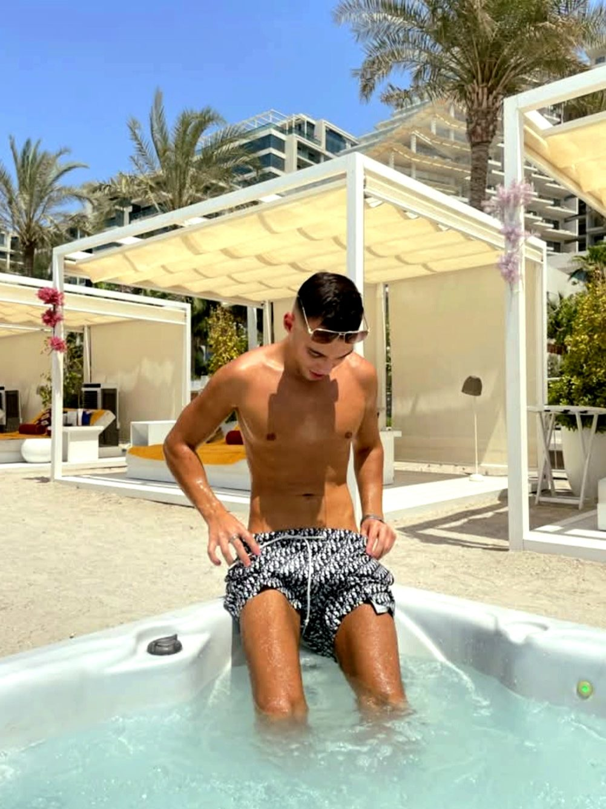

IA révolutionnaire · +5M de données d'experts

Perds enfin tes kilos
selon ton anatomie
Prends-toi en photo. Notre IA analyse ton corps et génère un programme sur-mesure. Plus précis qu'un coach ou une salle. 24/7, dans ta poche.
App unique au monde : analyse photo IA, méthode exclusive et +5M de données d'experts du sport — puissance inégalée, calibrée sur ton corps.
+5M données d'experts
100% selon ton anatomie
24/7 coach IA
3 étapes, zéro excuse
1
Prends-toi en photo
Ton corps, ta posture ou la zone à travailler.
2
L'IA analyse ton anatomie
Entraînée sur +5M de données d'experts du sport.
3
Reçois ton programme
Sur-mesure, ciblé, avec ton coach IA pour t'épauler.
Tout ce que les salles n'ont pas
Analyse photo IA
Ton corps lu en quelques secondes.
Programme ciblé
Adapté à ton anatomie, pas générique.
Coach IA 24/7
Pose tes questions à tout moment.
Suivi de progression
Vois tes progrès semaine après semaine.
Des résultats réels, mesurables
Glisse la barre au centre pour comparer

−12 kg en 4 mois · programme IA
Résultat individuel obtenu avec un suivi régulier. Les résultats varient selon chaque personne (morphologie, alimentation, assiduité). Photo non contractuelle.
Mieux que toutes les salles de sport
Rejoins l'entraînement du futur. Gratuit pour commencer.
Je commence maintenant@ By Brice Jct · Alpha OS · Groupe Alpha Nex Strasbourg